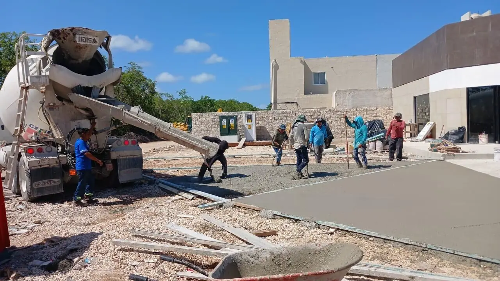

Construimos canchas de pádel y tenis en Cozumel: estudio de suelo, losa armada nivelada a ±3 mm, estructura de vidrio y malla, iluminación LED y techumbre de acero opcional, con una sola cotización cerrada. El mercado alto de Cozumel son villas frente al mar en las costas hoteleras norte y sur, casas para buzos con lancha y resorts; todo llega por ferry o barcaza de carga desde el continente.

Canchas de 10 × 20 m con cristal templado de 12 mm y estructura galvanizada y con pintura electrostática para el salitre.
Superficie acrílica sobre losa reforzada o postensada, con red, malla perimetral y rompevientos.
Techumbres de acero para jugar todo el año, más vestidores, bar y gradas en proyectos de hotel o club.
La isla recibe salitre y viento por todos lados y ha sufrido huracanes fuertes, así que herrería, ventanas, pintura y estructuras de jardín necesitan material marino y fijación antihuracán. Orientación, luz hacia vecinos y ruido se diseñan desde el inicio, porque casi todas las canchas aquí quedan junto a casas o habitaciones.
Cuadrillas y materiales cruzan en el ferry de carga desde Playa del Carmen; llevamos camiones completos, planeamos estancias de varios días y dejamos en obra los materiales más usados. Juntas de losa, acero galvanizado por inmersión y tornillería inoxidable se especifican para esta exposición, para que la cancha siga plana y sin óxido.
Las obras las licencia el municipio de Cozumel; la costa está bajo ZOFEMAT y parte de la isla es área protegida, y los edificios de condominio tienen sus propias reglas de administración.
El agua en la isla es dura y el suministro puede ser irregular, por eso cisternas, suavizadores y filtros son estándar y la grifería debe tolerar sarro.
| Concepto | Incluye | Precio (MXN) |
|---|---|---|
| Estructura de cancha de pádel | Cristal, malla, pasto, LED, instalación | $585,600–$1,037,000 |
| Losa y drenaje | Preparación, base, losa armada, drenes | $219,600–$390,400 |
| Techumbre de acero, una cancha | Estructura, lámina, canalones | $1,098,000–$2,196,000 |
| Cancha de tenis acrílica | Losa, superficie, red, malla, luz | $915,000–$1,708,000 |
Páginas útiles: Canchas de Pádel y Tenis — Riviera Maya · Muelles y Embarcaderos en Cozumel · Protección Costera en Cozumel · Cava de Vinos y Cine en Casa en Cozumel
Losa, cancha, iluminación y techumbre a precio cerrado. Respuesta en 2 minutos.
Cotizar por WhatsAppSu opinión ayuda a otros propietarios a decidir, y a nosotros a mejorar.
Escribir una reseñaVer reseñas en Google